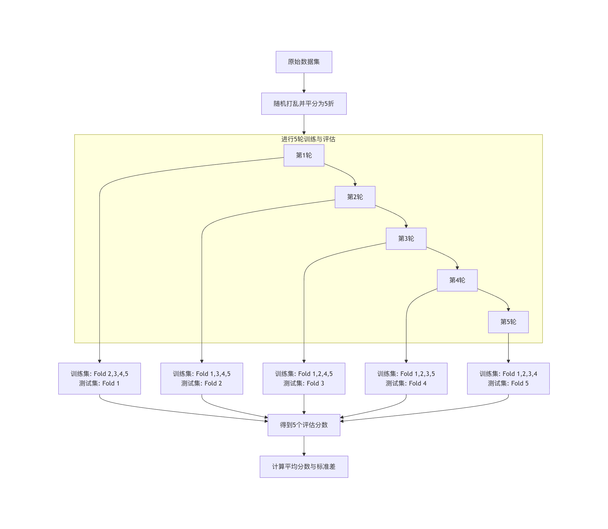

交差検証
機械学習の実践では、私たちはしばしば「モデルの良し悪しをどのように評価するのか」という核心的な問題に直面します。一部分のデータでモデルを訓練し、見たことのない別のデータでその性能をテストする方法を思いつくかもしれません。この考え方はまったく正しいですが、具体的にどうすればモデルをより信頼性高く、安定的に評価できるのでしょうか？これこそが交差検証が解決する核心的な問題です。
簡単に言うと、交差検証とは、データセットを繰り返し分割することでモデルの汎化能力（つまり新しいデータを処理する能力）を評価する統計手法です。これはモデルに模擬試験を実施するようなもので、複数の異なる模擬試験問題（データの部分集合）で実際のレベルを検証し、一度きりの試験の偶然性による誤判定を防ぎます。
本記事では、交差検証の原理、一般的な手法、そしてモデル最適化とエンジニアリングにおける重要な役割について深く理解していきます。
なぜ交差検証が必要なのか？
技術的な詳細に入る前に、まず比喩を使ってその必要性を理解しましょう。
あなたが学生で、重要な数学の試験を受けると想像してください。あなたの実力を評価する方法は2つあります：
- 方法A（単純分割）：先生が問題集からランダムに10問を選び、模擬試験を1回実施し、その点数で最終試験の成績を予測します。
- 方法B（交差検証）：先生は問題集を5つに分けます。1回目は2、3、4、5番目の問題で訓練し、1番目でテストします。2回目は1、3、4、5番目で訓練し、2番目でテストします……これを5回繰り返します。最後に、5回のテスト結果の平均を取ってあなたを評価します。
どちらの方法がより信頼できるでしょうか？明らかに方法Bです。。
- 方法Aのリスクは次のとおりです：もし選ばれた10問がたまたま自分の得意な問題形式ばかりだった場合、模擬試験の点数は実際より高くなり、真の実力を過大評価してしまいます。逆に、選ばれた問題が自分の知識の盲点ばかりだった場合は、点数が低くなりすぎて過小評価してしまいます。評価結果のばらつきが大きく、不安定です。
- 方法Bは、複数回の異なるトレーニング/テストの組み合わせにより、問題集内のさまざまな問題形式を経験するため、得られた平均点はあなたの総合的で安定した実力をよりよく表し、最終試験の結果予測もより正確になります。
機械学習では：
- 問題集は、私たちのデータセット全体。
- 学生は、私たちが訓練する機械学習モデル。
- 模擬試験の点数は、モデルの評価指標（例：正解率、平均二乗誤差など）。
- 最終試験は、モデルが将来の実際の未知データに対する性能です。
交差検証の核心的な目標は、モデルの汎化能力に対するより堅牢で偏りのない推定を提供し、それによってより信頼性の高いモデル選択、パラメータ調整、性能評価を支援することです。
交差検証の一般的な方法
交差検証にはさまざまな実装方法があり、異なるデータやシナリオに適しています。以下では最もよく使われるいくつかを紹介します。
1、ホールドアウト法 Hold-Out Validation
これは最も簡単で直感的な方法です。
実例
from sklearn.model_selection import train_test_split
from sklearn.ensemble import RandomForestClassifier
from sklearn.metrics import accuracy_score
# 実行可能なデータを構築する
# 200 条样本，4 个特征，二分类
np.random.seed(42)
X = np.random.randn(200, 4)
y = (X[:, 0] + X[:, 1] * 0.7 - X[:, 2] * 0.4 > 0).astype(int)
# 1. トレーニングセットとテストセットを分割する（7:3）
X_train, X_test, y_train, y_test = train_test_split(
X, y, test_size=0.3, random_state=42
)
# 2. 训练模型
model = RandomForestClassifier(random_state=42)
model.fit(X_train, y_train)
# 3. 测试集评估
y_pred = model.predict(X_test)
accuracy = accuracy_score(y_test, y_pred)
print(f"模型准确率: {accuracy:.4f}")
出力結果：
模型准确率: 0.8833
プロセスの説明：

-
利点：簡単で高速、計算コストが低い。
- 欠点：評価結果が単一のランダム分割に大きく依存します。分割が運悪いと、評価結果が代表性を持たない可能性があります。また、テストセットは一度しか使用されないため、データの活用が不十分です。
2. K分割交差検証 K-Fold Cross Validation
これは現在、最も一般的で標準的な交差検証方法です。
原理：データセットを均等にランダムにK個の互いに排他のな部分集合（フォールドまたはFoldと呼ばれます）に分割します。
各実験では、そのうちの1つの部分集合をテストセットとし、残りのK-1個の部分集合をトレーニングセットとして順に使用します。このプロセスをK回繰り返し、各部分集合が1回ずつテストセットとして使用されるようにします。最終的にK個の評価スコアが得られ、その平均値をモデルの最終的な性能推定とします。
実例
from sklearn.model_selection import cross_val_score, KFold
from sklearn.linear_model import LogisticRegression
# 実行可能なサンプルデータを構築する
# 100 条样本，4 个特征，二分类标签
np.random.seed(42)
X = np.random.randn(100, 4)
y = (X[:, 0] + X[:, 1] * 0.5 > 0).astype(int)
# 1. 初始化模型
model = LogisticRegression(max_iter=1000)
# 2. 定义 K 折交叉验证拆分器（K=5）
kfold = KFold(n_splits=5, shuffle=True, random_state=42)
# 3. 执行交叉验证
scores = cross_val_score(model, X, y, cv=kfold, scoring='accuracy')
print(f"各分割の精度: {scores}")
print(f"平均准确率: {scores.mean():.4f} (+/- {scores.std() * 2:.4f})")
每次折叠的准确率: [0.9 0.95 1. 0.95 1. ] 平均准确率: 0.9600 (+/- 0.0748)
K=5のときのフロー図：

K値はどのように選ぶのか？
- 一般的な値：5または10。これは経験的なトレードオフです。
- K値が小さい場合（例：3）：トレーニングセットは大きくなりますが、評価回数が少ないため、推定のばらつき（分散）が大きくなる可能性があります。
- K値が大きい場合（例：10または20）：評価はより安定します（分散が小さい）が、各トレーニングセットが元のデータセットにより近くなるため、より楽観的な推定バイアスが生じる可能性があり、計算コストも大幅に増加します。
- 極端な場合、K = N（サンプル数）：これは一つ抜き法（Leave-One-Out）です。毎回1つのサンプルのみをテストします。評価は最も偏りがありませんが、計算コストが非常に高く、通常はごく小さなデータセットにのみ使用されます。
利点：データを十分に活用でき、評価結果は安定して信頼できます。
欠点：計算コストはホールドアウト法のK倍です。
3. 層化K分割交差検証 Stratified K-Fold Cross Validation
これはK分割交差検証の重要な変種であり、特に分類問題中クラス分布が不均衡なデータセットに適しています。
解決する問題：通常のK分割交差検証では、ランダム分割により、一部の分割（Fold）における特定クラスのサンプル比率が元のデータセットと大きく異なる可能性があります。例えば、データセットに90%の正例と10%の負例がある場合、ランダムに5分割すると、ある分割に正例だけが含まれ負例がまったく含まれない可能性があり、その分割での評価が意味を失います。
層化K分割交差検証では、分割時に各分割内の各クラスのサンプル比率が元のデータセット全体の比率と一致するように保証します。
実例
# 使用方法は KFold とほぼ同じで、スプリッターを置き換えるだけです
stratified_kfold = StratifiedKFold(n_splits=5, shuffle=True, random_state=42)
scores = cross_val_score(model, X, y, cv=stratified_kfold, scoring='accuracy')
分類タスクでは、特にクラスが不均衡な場合、優先的に使用します。StratifiedKFold。
4. 時系列交差検証 Time Series Split
一方、時系列データでは、データの順序が極めて重要です（明日のデータは今日と昨日のデータに依存します）。データをランダムにシャッフルすることはできず、時間的な順序を保つ必要があります。
その原理は、トレーニングセットは常に時間的に早いデータで構成され、テストセットはその直後のデータであるということです。分割数（Fold数）が増えるにつれて、トレーニングセットのウィンドウは拡大し続けます。
実例
from sklearn.model_selection import TimeSeriesSplit
# 実行可能な時系列データの構築
# 100 个时间点，2 个特征
np.random.seed(42)
X = np.random.randn(100, 2)
# TimeSeriesSplit 示例
tscv = TimeSeriesSplit(n_splits=5)
for train_index, test_index in tscv.split(X):
print(f"训练集索引范围: {train_index)
print(f"测试集索引范围: {test_index)
print("---")
出力：
训练集索引范围: 0 到 19 测试集索引范围: 20 到 35 --- 训练集索引范围: 0 到 35 测试集索引范围: 36 到 51 --- 训练集索引范围: 0 到 51 测试集索引范围: 52 到 67 --- 训练集索引范围: 0 到 67 测试集索引范围: 68 到 83 --- 训练集索引范围: 0 到 83 测试集索引范围: 84 到 99 ---
モデルエンジニアリングにおける交差検証の応用
交差検証は評価ツールであるだけでなく、モデル最適化とエンジニアリングのプロセスにおける中核的な要素です。
応用1：モデル選択と比較
複数の候補モデル（線形回帰、決定木、サポートベクターマシンなど）から1つを選択する必要がある場合、テストセットを使って選択することはできません（そうしないとテストセットがトレーニングプロセスの一部になり、情報が「リーク」します）。正しい方法は次のとおりです：
- 各候補モデルについて、トレーニングセット上で交差検証を使用して性能を推定します。
- これらの交差検証の平均スコアを比較し、スコアが最も高いモデルを選択します。
- 最後に、この選択したモデルをトレーニングセット全体で再トレーニングし、独立したテストセットで最終的な一回限りの評価を行い、このスコアをモデルの最終性能として報告します。
実例
from sklearn.model_selection import cross_val_score, StratifiedKFold, train_test_split
from sklearn.linear_model import LogisticRegression
from sklearn.svm import SVC
from sklearn.tree import DecisionTreeClassifier
# 実行可能な分類データを構築
# 200件のサンプル、4つの特徴、二値分類
np.random.seed(42)
X = np.random.randn(200, 4)
y = (X[:, 0] + X[:, 1] * 0.8 - X[:, 2] * 0.3 > 0).astype(int)
# トレーニングセット/テストセットに分割
X_train, X_test, y_train, y_test = train_test_split(
X, y, test_size=0.25, random_state=42, stratify=y
)
# モデルを定義
models = {
'Logistic Regression': LogisticRegression(max_iter=1000),
'SVM': SVC(),
'Decision Tree': DecisionTreeClassifier()
}
# 層化K分割交差検証
cv = StratifiedKFold(n_splits=5, shuffle=True, random_state=42)
results = {}
# 交差検証評価
for name, model in models.items():
scores = cross_val_score(model, X_train, y_train, cv=cv, scoring='accuracy')
results[name] = scores.mean()
print(f"{name} 平均精度: {scores.mean():.4f}")
# 最良のモデルを選択
best_model_name = max(results, key=results.get)
print(f"\n交差検証によると、最良のモデルは: {best_model_name}")
# 最終的なトレーニングとテストセットの評価
best_model = models[best_model_name]
best_model.fit(X_train, y_train)
final_score = best_model.score(X_test, y_test)
print(f"最良モデルの独立テストセットでの最終精度: {final_score:.4f}")
出力：
Logistic Regression 平均准确率: 0.9533 SVM 平均准确率: 0.9400 Decision Tree 平均准确率: 0.8467 根据交叉验证，最佳模型是: Logistic Regression 最佳模型在独立测试集上的最终准确率: 1.0000
応用2：ハイパーパラメータ調整
ハイパーパラメータはモデルトレーニング前に設定が必要なパラメータです（例：ランダムフォレストの木の数n_estimators、SVMのペナルティ係数C）。最適なハイパーパラメータの組み合わせを探すプロセスをハイパーパラメータ調整と呼び、交差検証はその標準的な評価方法です。
最も一般的な方法はグリッドサーチ交差検証。
実例
from sklearn.model_selection import GridSearchCV, train_test_split
from sklearn.ensemble import RandomForestClassifier
# 実行可能な分類データを構築
# 300件のサンプル、5つの特徴、二値分類
np.random.seed(42)
X = np.random.randn(300, 5)
y = (X[:, 0] * 0.6 + X[:, 1] * 0.4 - X[:, 2] > 0).astype(int)
# トレーニングセット/テストセットに分割
X_train, X_test, y_train, y_test = train_test_split(
X, y, test_size=0.25, random_state=42, stratify=y
)
# 1. パラメータグリッド
param_grid = {
'n_estimators': [50, 100, 200],
'max_depth': [None, 10, 20],
'min_samples_split': [2, 5, 10]
}
# 2. 基本モデル
rf = RandomForestClassifier(random_state=42)
# 3. GridSearchCV
grid_search = GridSearchCV(
estimator=rf,
param_grid=param_grid,
cv=5,
scoring='accuracy',
n_jobs=-1
)
# 4. グリッドサーチ（トレーニングセットのみ）
grid_search.fit(X_train, y_train)
# 5. 最適なパラメータとスコア
print(f"最適なパラメータ: {grid_search.best_params_}")
print(f"最適な交差検証スコア: {grid_search.best_score_:.4f}")
# 6. テストセット評価
best_rf_model = grid_search.best_estimator_
test_accuracy = best_rf_model.score(X_test, y_test)
print(f"調整後のモデルのテストセットでの精度: {test_accuracy:.4f}")
出力：
最佳参数: {'max_depth': None, 'min_samples_split': 2, 'n_estimators': 100}
最佳交叉验证分数: 0.9067
调优后模型在测试集上的准确率: 0.9467
重要なポイント： GridSearchCV内部で交差検証がすでに完了しています。トレーニングセットをX_trainさらに小さな「トレーニングサブセット」と「検証サブセット」に分割してパラメータを評価します。したがって、私たちが渡すX_trainは全体の「問題集」に相当し、X_testは調整プロセスには一切関与しない、最終検証用の「究極の試験問題」です。
実践演習とまとめ
実践演習
- 基本実装：を使用
sklearn付属のアヤメデータセットを、それぞれtrain_test_splitとcross_val_score(K=5) でトレーニングして評価するKNeighborsClassifier、2つの評価方法で得られたスコアを比較します。 - モデル比較：同じデータセット上で、交差検証を使用して比較する
SVC、RandomForestClassifierとGradientBoostingClassifierの性能。 - パラメータ調整：のために
SVCモデルのパラメータグリッドを設計する（Cとgammaを含む）、を使用してGridSearchCV最適なパラメータを見つけます。
重要なポイントのまとめ
- 交差検証の目的：モデルの汎化能力に対するより頑健で信頼性の高い推定を得ること。
- 核心的な方法：K分割交差検証はゴールドスタンダードであり、分類問題では優先的に使用する層化K分割交差検証。
- 重要な違い：
- トレーニングセット/検証セット：モデルのトレーニングと開発プロセスでの評価に使用される（モデル選択、パラメータ調整など）。交差検証はこの段階で行われます。
- テストセット：すべての開発が完了した後にのみ、使用される最終的な一回限りの性能報告。厳密に分離する必要があり、いかなる意思決定にも使用してはなりません。
- エンジニアリング上の役割：交差検証はモデル開発（トレーニング、パラメータ調整）とモデル評価（テスト）を結ぶ架け橋であり、モデルの品質を確保し、過学習を防ぎ、信頼性の高いモデル選択と最適化を実現するための基盤です。